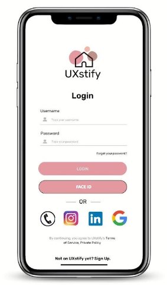

I look forward to working with you.
Everyday, we walk past or come across at least 1 bad design. I want to help in decreasing the bad designs that stick out, so people don't have to just "deal with it".
I love history, especially ancient history. It inspires me to create, and seeing how far humanity has come makes me feel like it is a blessing to be alive in this time where we have everything. Looking at things that have been excavated from back then, it shows that humans have always been creating for issues.
I am a fan of listening to music and playing music on guitar, recently I have picked up the ukulele as well. I love Oqtay Ağayev's music especially, there is something very nice about old music and how the quality isn't perfect on streaming websites due to the lack of proper recording equipment back then.
Ever since I was a child, I loved creating with yarn. Knitting, crochet, and now Tunisian crochet, I have learnt a lot of techniques and I want to keep learning. My favourite things to make are clothing or bags, as I can put in as much customization as I want into them.
In the past year or so, I have learnt how to use Adobe InDesign, Illustrator, and Photoshop. I think I am still a beginner at using the softwares but I am able to produce products out of it.
Also a recent skill, I am learning how to use HTML, CSS, and JavaScript. This portfolio is the result of using this tool, and a lot of hard work.
Freeform is an Apple software, I have been using it recently to brainstorm, create wireframes, and ideate in general. The app lets you use the Apple Pencil to draw, and add text or shapes as well.
I have graduated high school with an IB Diploma along with a high school diploma, and I am pursuing a UX degree at Wilfrid Laurier University.
This was a task for a class where I had to re-design a website that was badly made. I had made wireframes on Freeform, these are a few examples from the task:
The UXstify app was a group project for one of my classes. The app works like a social media app, but to "match" UX designers both professional and beginners alike with companies that are hiring UX designers so they can get jobs. The screenshots are just few key pages of the app, it was very fun to work on this since the final product that came in was fully interactive and was made using Canva and Google Slides.
One of my personal favourites, these were from a task where I had to make 30 different posters for a hypothetical festival. These were made in Adobe Illustrator.
Lastly, this was also another group project from class. This is a landing page mockup for a hypothetical artist, "Lawrence Lawrence". It was fun to add the website elements. This was made using InDesign.